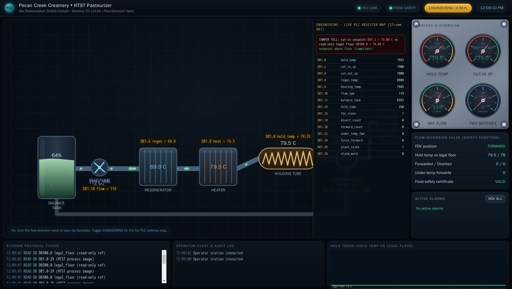

Exercise OTSOC-4.4: Under-Processed and Shipped
Engagement Status
| Client | Pecan Creek Creamery (fictional) |
|---|---|
| Role | OT SOC Analyst, Process Safety and Food Safety |
| Phase | Safety Detection Response Reporting |
What you know so far: From OTSOC-4.3 you know the HTST flow-diversion valve (FDV) is the public-health critical control on the mix line, and you can name its two defeat paths. Overnight, a capture shows the pasteurizer forwarded mix while the hold temperature was below the legal cut-in. The mix that should have been diverted went forward to packaging instead. Your SOC has to determine which defeat path was used, quantify how many under-temperature batches forwarded, and make the recall and notification call.
Scenario
Last night the HTST pasteurizer at past.pcc.local (S7comm, port 102) forwarded ice-cream mix to filling during a window when the hold temperature was below the legal cut-in. Under-processed mix that should have returned to the balance tank went forward to packaging instead. Under-processed dairy shipped to customers is a food-safety critical-control-point failure with public-health impact, the kind of event that triggers a recall and a notification obligation. The evidence is pasteurizer-divert.pcap on pcaphost.pcc.local (HTTP, port 80), which captured the S7 engineering-workstation write that lowered the cut-in setpoint. Your assignment is to identify the defeat path from the live pasteurizer state and the capture, quantify the forwarded under-temperature batches, and make the response call. The reconstructed under-temperature forwarding event is the deliverable: you write it up and submit it to the Deliverable Grader, and the grader returns the flag once your writeup passes its rubric.
Why this matters
In OT the priority order is inverted: Safety, then Integrity, then Availability, then Confidentiality. Food safety is the consequence that anchors this call. Once under-processed product has forwarded, the question is no longer availability or line uptime. The question is public health: who consumed the product, and who must be told. Pasteurization is the kill step for the pathogens raw dairy can carry, and a batch that bypassed it is a batch that may carry them.
A defender's job in the response phase is to turn evidence into a defensible recall decision. The cut-in setpoint reading below the legal floor identifies the defeat path. The pasteurizer-divert.pcap capture corroborates it with the actual engineering-workstation write on the wire. The under-temperature forward counter quantifies the impact: every tick the FDV forwarded below the floor is a batch that should not have shipped. A recall is expensive and disruptive, so it has to rest on numbers, not suspicion. The inverted triad makes the priority unambiguous: contain the public-health risk first, ordered Safety before Availability, then deal with production. Getting the defeat path, the count, and the notification order right is the whole exercise.
Write up the reconstructed under-temperature forwarding event and submit it to the Deliverable Grader; the grader returns the flag when your writeup passes.
| Credentials in scope | Username | Password | Where it is used |
|---|---|---|---|
| None | n/a | n/a | S7comm reads and the pcap archive are unauthenticated |
The operator cockpit
Pecan Creek Creamery runs a live operator cockpit for the HTST line, and it is the screen the night shift was watching when the mix forwarded under temperature. Open it in a browser at the address shown for hmi.pcc.local in the Exercise Network panel (HTTP, port 80). The cockpit lays the mix path out left to right: balance tank, feed pump, regenerator, heater, holding tube, and the flow-diversion valve that decides forward or divert. The gauges and the food-safety panel on the right carry the hold temperature, the cut-in setpoint, the legal floor, and the under-temperature forward count you quantify in Step 2.

Flip the cockpit into its Engineering view and every element is labelled with the live PLC address behind it, so the cut-in setpoint reads DB1.2 and the under-temperature forward counter reads DB1.22 straight off the HMI. The same register map your scripts read by hand sits one click away on the operator console.

Learning Objectives
- Identify the lowered-cut-in defeat path from the pasteurizer state and the capture
- Confirm the cut-in setpoint was driven below the read-only legal floor
- Quantify the forwarded under-temperature batches from the
under_temp_fwdcounter - Cite
pasteurizer-divert.pcapas the evidence source for the engineering-workstation write - Make the recall and notification call under the inverted priority order
| Detail | Value |
|---|---|
| Difficulty | Advanced |
| Estimated Time | 50 to 60 minutes |
| Prerequisites | OTSOC-4.3 (the FDV and its defeat paths) |
| Flag | Source | Found? |
|---|---|---|
OCR{pasteurizer_under_temp_<masked>} |
Returned by the grader when your recall notification passes |
Background: The Impact Counter
The pasteurizer datablock carries a counter that rises every tick the FDV forwards mix while the hold temperature is below the legal floor. The counter is the impact number a recall decision rests on.
| DB / offset | Name | Meaning |
|---|---|---|
| DB1 offset 2 | cut_in_sp_c |
cut-in setpoint, 7900 normal, lowered to 6800 (68 C) by the attack |
| DB1 offset 16 | fdv_state |
0 = DIVERT, 1 = FORWARD |
| DB1 offset 22 | under_temp_fwd |
count of under-temperature forwards, the impact figure |
| DB300 offset 0 | cut_in_legal_floor |
7900, read-only legal floor |
0x44 in the capture is 68 C
The capture shows the cut-in written to 0x44. As a temperature in C times 100 the attack drove the setpoint to 6800, which is 68.00 C, well below the 79.00 C legal floor. A cut-in at 68 C lets mix that never reached the kill temperature count as legal and forward to filling.
Before You Begin: Populate Variables From the Panel
After the lab reaches Running, the Exercise Network panel lists past.pcc.local and pcaphost.pcc.local. Read both IPs into variables.
Kali - capture the target IPs into variables
Two succeeded! lines mean the pasteurizer and the capture archive are reachable and the variables are set for the session.
Walkthrough
Step 1: Identify the Defeat Path From the Live State
Read the live cut-in setpoint at DB1 offset 2 and compare it against the read-only legal floor at DB300 offset 0, then read the FDV state at offset 16. The scripted attack may still be acting, so read the cut-in in a short loop until it settles below the floor.
Kali - read the cut-in setpoint, the legal floor, and the FDV state
python3 - "$PAST" <<'PY'
import sys, struct, time, snap7
c = snap7.client.Client()
c.connect(sys.argv[1], 0, 1, tcpport=102)
floor = struct.unpack(">H", c.db_read(300, 0, 2))[0] # legal floor
cut_in = None
for _ in range(30):
cut_in = struct.unpack(">H", c.db_read(1, 2, 2))[0] # cut_in_sp_c
if cut_in < floor:
break
time.sleep(2)
fdv = struct.unpack(">H", c.db_read(1, 16, 2))[0] # fdv_state
print(f"legal floor: {floor/100:.2f} C")
print(f"cut-in setpoint: {cut_in/100:.2f} C")
print(f"fdv_state: {fdv} ({'FORWARD' if fdv==1 else 'DIVERT'})")
print("below floor:", cut_in < floor)
c.disconnect()
PY
A cut-in of 6800 (68.00 C) sitting below the 7900 legal floor while fdv_state reads FORWARD is the lowered-cut-in path, defeat path 1 from the previous exercise. The bar was lowered so under-processed mix counts as legal and forwards. The FDV is doing exactly what its logic says, but its logic was tampered.
Step 2: Quantify the Impact
Read the under_temp_fwd counter at DB1 offset 22. The counter rises every tick the FDV forwards while the hold temperature is below the legal floor, so its value is the number of under-temperature forwards: the batches that should have diverted but shipped instead. Read it twice a few seconds apart to confirm it is still climbing.
Kali - read and confirm the under-temperature forward counter
python3 - "$PAST" <<'PY'
import sys, struct, time, snap7
c = snap7.client.Client()
c.connect(sys.argv[1], 0, 1, tcpport=102)
a = struct.unpack(">H", c.db_read(1, 22, 2))[0] # under_temp_fwd
time.sleep(5)
b = struct.unpack(">H", c.db_read(1, 22, 2))[0]
print(f"under_temp_fwd first read: {a}")
print(f"under_temp_fwd after 5s: {b}")
print("rising:", b > a)
c.disconnect()
PY
A non-zero counter that is still climbing confirms the FDV is actively forwarding under-temperature mix right now. The value is your impact figure: every count is an under-processed batch forwarded to filling. A rising counter also tells the responder the attack is ongoing, not historical, which sharpens the urgency of the stop call.

Step 3: Corroborate With the Capture
The live state tells you what is true now. The pasteurizer-divert.pcap capture on the archive tells you how it got there: the S7 engineering-workstation write that set the cut-in to 0x44 (68 C). Pull the capture index and confirm the file is present, then note it as your evidence source.
Kali - list the capture archive and locate the evidence
A line echoing pasteurizer-divert.pcap confirms the evidence file is in the archive. Download it and inspect the S7 write that lowered the cut-in:
Kali - download the capture and find the cut-in write
The S7comm frames from the engineering-workstation source show the write-request function that carried the lowered cut-in value to DB1. Pairing the capture (the write on the wire) with the live state from Steps 1 and 2 (the cut-in below the floor and the rising counter) gives an evidenced timeline: the attacker lowered the bar, and the pasteurizer has been forwarding under-temperature mix since. Cite the pcap filename in your report as the source for the engineering-workstation write.
Step 4: Make the Recall and Notification Call
You now hold the defeat path (lowered cut-in to 68 C, below the 79 C floor), the impact figure (the under_temp_fwd count), and the evidence source (pasteurizer-divert.pcap). The inverted triad orders the response. Under-processed dairy forwarded to filling is recall-triggering, and Safety outranks Availability, so containment and notification come before any concern about restarting the line.
Defender response to record
Finding: Cut-in setpoint lowered to 68 C, below the 79 C legal floor,
while the FDV forwarded. under_temp_fwd counter rising.
Defeat: Path 1 - lowered cut-in (DB1 offset 2 below DB300 floor).
Evidence: pasteurizer-divert.pcap - S7 engineering-workstation write
set cut-in to 0x44 (68 C). Live state corroborates.
Impact: under_temp_fwd batches forwarded under temperature (still rising).
Priority: Safety > Integrity > Availability > Confidentiality.
Action: 1. Stop the line and quarantine the affected batches now.
2. Initiate recall of forwarded under-temperature product.
3. Notify food-safety lead and the relevant public-health
authority; preserve the pcap and PLC state as evidence.
4. Restore the cut-in to 79 C under change control.
5. Restart production only after the FDV is verified clean.
The ordered call plus the reconstruction is the deliverable you submit to the grader: contain the public-health risk and notify first, restore and restart last. When your writeup passes the rubric, the grader returns the flag.
Output Interpretation
- A cut-in of 68 C below the 79 C legal floor while the FDV forwards is the lowered-cut-in defeat path; the bar was moved, not removed.
- A non-zero, rising
under_temp_fwdcounter is the impact figure and proof the attack is ongoing, not historical. - The pcap supplies the on-the-wire engineering-workstation write that set the cut-in; the live state corroborates it. Two sources beat one.
- Once under-processed product has forwarded, the call is public health: recall and notify first, restore and restart last, ordered Safety before Availability.
Analysis Questions
1. The cut-in reads 68 C and the FDV is forwarding. Which defeat path is this, and how do you know?
Reveal answer
Defeat path 1, the lowered-cut-in path. The cut-in setpoint at DB1 offset 2 was driven to 6800 (68 C), below the read-only legal floor of 7900 (79 C) at DB300. The FDV logic itself is untouched; it correctly forwards mix that reads above its setpoint, but the setpoint was lowered so under-processed mix now qualifies. The force-forward path would instead leave the cut-in alone and override the FDV state directly.
2. Why is the under_temp_fwd counter, not the cut-in value, the figure a recall rests on?
Reveal answer
The cut-in value tells you the protection was defeated; the under_temp_fwd counter tells you how many batches actually forwarded under temperature, which is the quantity of product at risk. A recall has to be scoped to real impact, not to the existence of a tamper. The counter turns a known compromise into a numbered batch count that the recall and the notification can be built on.
3. The capture and the live PLC state agree. Why cite both rather than just the live read?
Reveal answer
The live read shows the current state but not how it got there; an operator could argue it was a legitimate retune. The pcap shows the actual engineering-workstation write on the wire that lowered the cut-in, with source and timing. Together they form an evidenced timeline that survives scrutiny: the attacker wrote the setpoint down, and the pasteurizer has been forwarding under-temperature mix since. A recall and a regulatory notification need that defensible chain.
4. The line is still producing salable-looking product. Why stop it before worrying about uptime?
Reveal answer
The inverted triad puts Safety above Availability, and here Safety is public health. Every minute the line runs with the cut-in below the floor forwards more under-processed dairy that may carry pathogens. Lost production is recoverable; product that reaches and harms customers is not. The correct order is stop and quarantine, recall and notify, then restore and restart.
Key Takeaways
- A cut-in setpoint below the read-only legal floor while the FDV forwards is the lowered-cut-in defeat path.
- The
under_temp_fwdcounter quantifies impact: each count is an under-processed batch forwarded, and a rising counter means the attack is live. - Corroborate the live PLC state with
pasteurizer-divert.pcap, which carries the engineering-workstation write; cite the pcap as the evidence source. - Under-processed dairy forwarded to filling is recall-triggering with a notification obligation.
- The inverted triad orders the response: contain and notify under Safety first, restore and restart for Availability last.
Capture the Flag
Reconstruct the under-temperature forwarding event on past.pcc.local: confirm the cut-in below the 79 C legal floor, quantify the under_temp_fwd count, and corroborate with pasteurizer-divert.pcap. The reconstruction is not the answer by itself; it is the deliverable you submit. Write up the defeat path (the lowered cut-in at 6800, below the 7900 legal floor), the impact count from under_temp_fwd, the evidence (pasteurizer-divert.pcap), and the ordered recall and notification call, then POST that writeup to the Deliverable Grader shown in the Exercise Network panel (HTTP, port 80).
Check the rubric first so you know what the grader scores. A GET against /rubric returns the checklist your submission is measured against, with no flag attached.
Kali - read the grader rubric for this deliverable
With the reconstruction in hand, assemble the recall notification writeup and POST it to the grader. Cover the defeat path, the impact count, the pcap evidence, and the safety-first ordering under the inverted triad in the submission field.
Kali - submit your recall notification to the grader
curl -s -X POST "http://$GRADER/check" \
-H 'Content-Type: application/json' \
-d '{"deliverable":"under-temp-notify","submission":"<your notification: lowered cut-in defeat path (6800 below the 7900 legal floor), the under_temp_fwd count, pasteurizer-divert.pcap as evidence, the recall and notification call, and safety-first ordering under the inverted triad>"}'
A passing writeup returns {"passed": true, "score": ..., "total": ..., "flag": "OCR{pasteurizer_under_temp...}"}. Copy that returned flag into the OCR platform to complete the exercise. A submission that misses rubric items comes back with "passed": false and no flag field, so revise the writeup and POST it again until it passes.
| Flag | Where | Form |
|---|---|---|
| Under-temperature forwarding marker | Returned by the Deliverable Grader when your recall notification writeup passes | OCR{pasteurizer_under_temp_<masked>} |